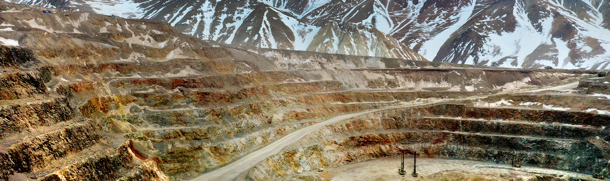
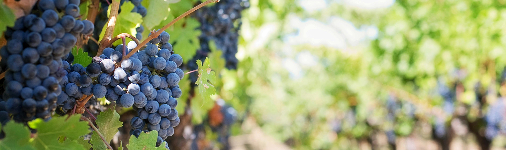
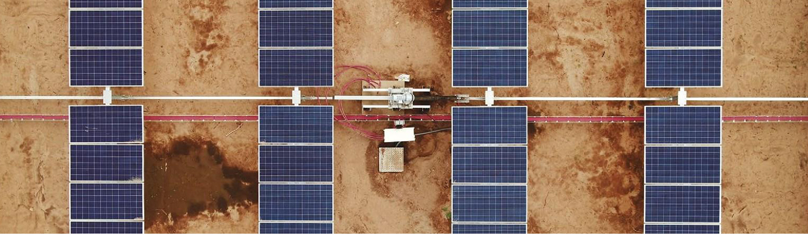
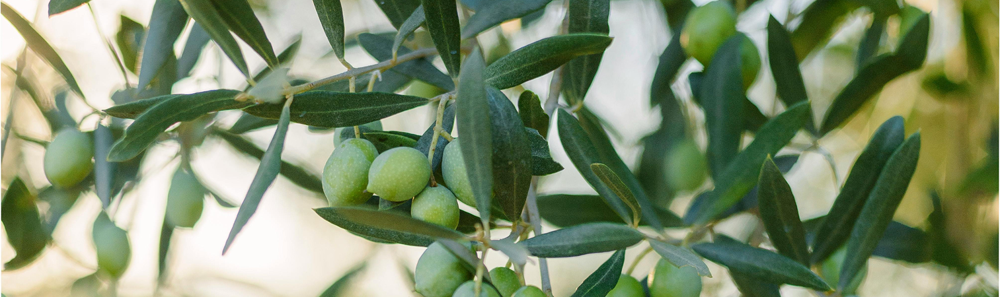
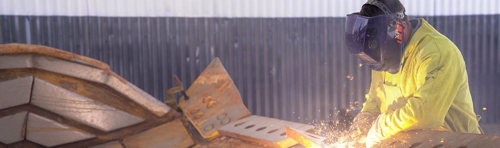

La oferta exportable de la provincia de San Juan está integrada por una amplia gama de cadenas productivas de bienes y servicios entre los que se destacan Minería, Vitivinicultura, Olivicultura, Industria y Agro-Industria, Frutihorticultura, y Energías.


Según el Instituto Nacional de Vitivinicultura (INV), la superficie de vid de San Juan registrada al 31 de diciembre de 2025 alcanza las 38.703 has. distribuidas en 4.148 viñedos. San Juan es la provincia con mayor diversificación en cuanto a la aptitud de las variedades cultivadas; El 70,4% del total corresponde a variedades aptas para elaboración de vino y/o mosto y el 29,6% a uvas aptas para consumo en fresco y/o pasas. En el 2025 esta cadena productiva generó aproximadamente unos U$S 138 millones FOB en ventas al exterior de su oferta exportable de vinos, mosto de uva, uva en fresco y pasas. La producción de vinos de gran calidad enológica se sitúa en los Valles de Pedernal, Calingasta, Zonda, Ullum e Iglesia, con alta concentración de azúcar en sus vides. Entre las principales variedades se destacan: Cereza, Malbec, Pedro Giménez, Bonarda, Syrah, Torrontés Sanjuanino para elaboración de vinos y mostos, y Flame Seedless, Red Globe, Arizul, Fiesta, Sultanina, Cardinal, y Superior Seedless para uvas de mesa y pasas.

En la provincia, existen factores que han llevado a un gran crecimiento urbano del área metropolitana de San Juan en un eje Este-Oeste, en particular departamentos de Santa Lucía, Caucete, San Martín, al desarrollo de nuevos emprendimientos vitivinícolas y agropecuarios, al turismo nacional e internacional, así como la proyección de grandes parques de generación fotovoltaica. Todo ello conduce al requerimiento de una expansión del Sistema Integrado Provincial, ofreciendo nodos fuertes de conexión para los nuevos suministros. San Juan es la provincia con mayor cantidad de parques solares instalados en Argentina.

San Juan es el principal productor y elaborador de aceite de oliva extra virgen, con el mejor rendimiento y calidad COI de la Argentina. Es uno de los polos olivícolas más tecnificados del mundo en la actualidad. Alrededor de U$S 26 millones FOB es el promedio anual de 2025 de exportaciones del sector olivícola de la provincia, con un 86% originado por el aceite de oliva virgen extra, y el resto, por aceitunas en conserva, siendo las variedades de mayor cultivo, Arbequina, Arauco, Picual, entre otras. Actualmente son unos 34 los establecimientos elaboradores de aceite de oliva de la provincia, mientras unos 12 se dedican a elaboración de aceituna de conserva, según datos de la Cámara Olivícola de San Juan.

La industria sanjuanina generó en 2025 U$S 138 millones en valor FOB en envíos al exterior de medicamentos, placas y baldosas de cerámica; cubos, dados y artículos similares de cerámica. También placas, hojas y tiras de polímeros de cloruro de vinilo, surtidos de juntas de distinta composición presentados en distintos envases, juntas metaloplásticas, prendas de vestir y artículos textiles, así como tapones, tapas, cápsulas y otros dispositivos de cierre, de plástico. Los medicamentos están ocupando un espacio creciente en la producción y comercio internacional de la provincia. Representa el principal rubro dentro de la industria con u$S 102 millones FOB en 2025. El sector Agroindustrial aporta agregado de valor a la producción de ciruelas, damascos, duraznos, etc.; caldos de manzanas para la obtención de sidras; algodón de fibra mediana y larga.
La acción del cluster semillero, integrado por los productores de campo, más las labores del SENASA, el INASE, el INSEMI y ASPROSEM, todas entidades vinculadas con el control, la fiscalización, la sanidad y la búsqueda de la calidad final en su máxima expresión, han llevado a San Juan a crecer en este sector. Son unas 40 empresas pyme las que componen esta área, que incluye el mercado interno, con fuerte presencia nacional con más de 30 especies de hortalizas (cebolla, zanahoria, acelga, espinaca, lechugas, porotos, apio, perejil, rúcula, rabanito, remolacha, berenjena, tomate, pimiento, zapallo, zapallito y otros), más una gran presencia en ventas a 12 provincias en el sector de las alfalfas, también se suman simientes de flores, cereales y granos.Yendo a la exportación, cebolla, en semillas es la líder, siguiéndole zanahoria, hinojo, brócoli, lechugas, coles, rábanos y otras especies. Como destinos: Estados Unidos, Holanda, otros países de Europa y distintos compradores asiáticos.
Esta actividad ha crecido en inversiones considerablemente en los últimos años de la mano de la transformación de la vitivinicultura local y el auge de las pequeñas bodegas del tipo boutique, volcadas a la prestación del turismo enológico y gastronómico, elaborando excelentes vinos de autor y adjuntando paulatinamente una interesante oferta gastronómica y, en menor medida, alojamientos. Las nuevas inversiones vitivinícolas, tanto en superficie de vid como de establecimientos enológicos, se dan en los Departamentos Cordilleranos de Calingasta e Iglesia, de la mano de pequeños y medianos emprendimientos dedicados a la elaboración de vinos de altura varietales y blends. También es destacable el desarrollo observado en el Departamento Sarmiento, en el Valle de Pedernal donde se producen las uvas con las que se elaboran los vinos más premiados y prestigiosos de San Juan. También se renuevan y crecen las inversiones en uva para pasa.